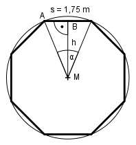

Aufgabe 107 Wie groß ist die Querschnittsfläche A einer achteckigen Säule mit einer Seitenlänge von 1,75 m?

360° α = ------ = 45° 8 Im Dreieck BAM: s/2 tan α/2 = ----- |*h h h * tan 45/2° = s/2 :tan 22,5° s 1.75 m h = ---------------- = ------------- = 2,1 m 2 * tan 22,5° 2 * 0,4142 s * h 1,75 m * 2,1 m A = 8 * ------- = 8 * ----------------- = 14,7 m2 2 2